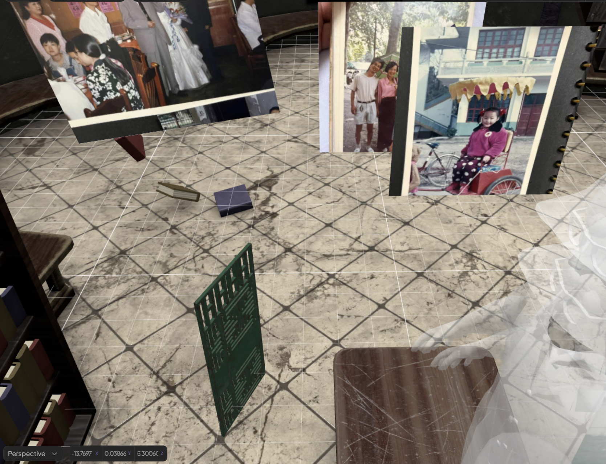

01 Cultural Research to AI Concept Video
Visual worldbuilding, AI-assisted concept workflow, cultural image direction, and VR interaction planning.


Visual Design / Digital Media / Interactive Experience
I create visual systems for digital content, interactive scenes, AI-assisted imagery, and spatial experiences. My current portfolio includes cultural visual research, AR/VR interaction, mobile interface design, virtual exhibition design, and immersive learning environments. For a graphic design or visual design internship, I bring a mix of visual taste, practical production thinking, and the ability to turn research or experiential ideas into clear, engaging media assets.
Visual worldbuilding, AI-assisted concept workflow, cultural image direction, and VR interaction planning.

Mobile interface design, AR spatial interaction, user-flow structure, and digital care content.

Immersive identity experience with avatar staging, mirror interaction, and Unity development.
Spatial archive design, virtual exhibition layout, shared memory space, and interaction direction.

VR learning scene with object observation, workshop art direction, and guided interaction.
Visual world / AI-assisted workflow / VR direction
Role: Visual Design / Cultural Research / AI Visual Generation / Concept Video Design
This project translates Tibetan cultural research into an AI-assisted concept video and immersive visual direction. I developed the image language from reference boards, route diagrams, storyboard frames, and scene studies, focusing on atmosphere, composition, color, and cultural motifs. The work presents horse racing, sutra printing, ritual spaces, and character moments as a coherent digital media system. For a visual design context, the project shows how research can become layout, mood, sequence, and content direction for video, exhibition, and interactive experience formats.


Mobile interface / AR interaction / Care experience
Role: UX UI / Visual Design / AR Interaction / Digital Product Concept
AR Care Companion App Design presents a mobile care system through clear interface layouts, AR spatial scenes, and a soft digital visual language. I shaped the experience around older adults' daily awareness, decision-making, and family memory sharing, translating research into practical screens and visual flows. For a visual design portfolio, the project highlights hierarchy, mobile composition, icon-like interaction cues, and content organization. It also shows how AR can become approachable through familiar phone interfaces, warm imagery, and simple guided moments rather than complex technical presentation.


Morphing Mirror / Embodied interaction / Unity VR
Role: Visual Design / Spatial Interaction / VR Experience Design
VR Experience centers on Morphing Mirror, an immersive work where the viewer meets a changing avatar through a mirror-like interaction. I directed the visual tone, staged the environment, prepared the avatar presentation, and structured the VR experience so movement, reflection, and body feedback became part of the visual narrative. The project uses a restrained spatial setup to make the character transformation feel immediate and personal. It communicates immersive experience design through strong screenshots, clear staging, and a memorable visual concept.


Spatial archive / Virtual exhibition / Shared memory
Role: Visual Design / Spatial Archive Design / Virtual Exhibition / Interaction Concept
Virtual Album Space is a VR memory environment where family photos become part of a shared spatial archive. I focused on the visual layout of the room, the relationship between image surfaces and navigation, and the feeling of entering a personal exhibition. The project turns familiar photo albums into a more immersive digital media format, using scale, placement, and environmental details to guide attention. For design reviewers, it shows my ability to organize emotional content into a coherent space with clear visual hierarchy and interaction direction.


VR scene design / Learning content / Object interaction
Role: Visual Design / VR Interaction / Scene Layout
VR Phone Repair presents a repair workspace as a focused immersive learning scene. I led the scene layout, visual organization, and interaction flow, using tools, parts, wall objects, and workshop details to guide attention without overcrowding the view. The design goal was to make technical content approachable through strong staging, object scale, and visual cues. Instead of treating the work as a purely functional prototype, I shaped it as a clear digital environment that can be understood quickly through screenshots, short demos, and PDF portfolio presentation.


Open this page in a browser, press Ctrl + P, choose Save as PDF, and keep background graphics enabled for the best result. This file uses page breaks and A4 print CSS for clean export.